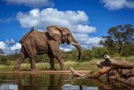
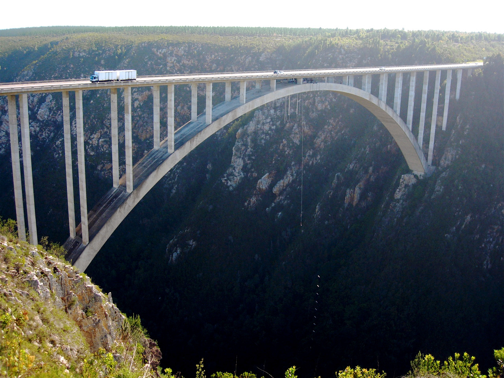

About South Africa
South Africa is a land of diverse landscapes, rich culture, and unique history. From beautiful beaches along the coastline to majestic mountains in the heartland, the country offers an incredible array of scenery and experiences for every traveler.

A journey through South Africa reveals iconic wildlife in world-renowned national parks, where you can encounter the "Big Five" – lions, elephants, rhinos, leopards, and buffaloes – in their natural habitat. The safari experience here is unparalleled, blending adventure with breathtaking views of the savannas and reserves.
South Africa's cities each have their own distinct charm. Cape Town, with its famed Table Mountain, vibrant nightlife, and stunning beaches, is a true gem. Johannesburg, known as the "City of Gold," offers a modern urban experience infused with a rich history and dynamic arts scene. Durban, meanwhile, delights with its blend of African, Indian, and colonial influences, along with warm beaches and exceptional cuisine.

The country's cultural heritage is as rich as its landscapes. South Africa is home to a tapestry of traditions and languages, with eleven official languages and numerous indigenous communities. Visiting South Africa is an invitation to learn about the struggles and triumphs of its people, from the time of ancient civilizations through to the era of Nelson Mandela and the continuing journey towards unity and diversity.
For thrill-seekers, South Africa offers a variety of outdoor activities – from diving with great white sharks in Gansbaai to bungee jumping off Bloukrans Bridge, one of the highest commercial jumps in the world. The country also boasts world-class vineyards in regions like Stellenbosch and Franschhoek, where travelers can enjoy exquisite wines and scenic vineyard landscapes.
Whether you're drawn to South Africa's natural wonders, its vibrant cities, or its cultural legacy, every part of the country promises a memorable experience. It’s a destination that captivates the heart, feeds the soul, and leaves an everlasting impression on all who visit.
Incredible Wildlife
Home to the "Big Five" — lions, elephants, leopards, rhinos, and buffaloes — South Africa’s national parks offer thrilling safaris for wildlife enthusiasts.
Rich Cultural Heritage
South Africa boasts eleven official languages and is known as the "Rainbow Nation" for its cultural diversity, vibrant traditions, and music.

Stunning Landscapes
From Table Mountain to Drakensberg, South Africa's landscapes are renowned worldwide, offering breathtaking views and scenic hiking trails.

Fascinating History
Explore South Africa’s journey from its ancient origins to modern times, including significant events like the struggle against apartheid.